Paving and raised beds

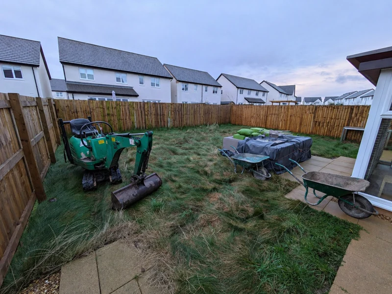

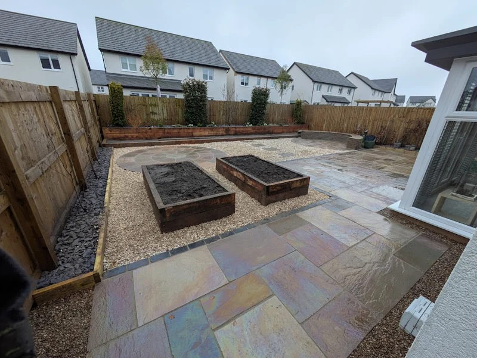
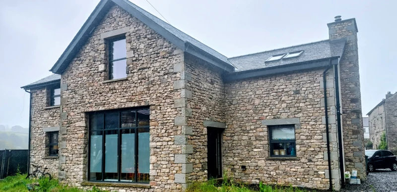
JF Stone & Build
From a garden wall to a new patio, JF Stone & Build brings careful preparation and a practical approach to your outdoor space.
Our services
Work for homes across South Cumbria and the surrounding area, from individual improvements to a full garden layout.
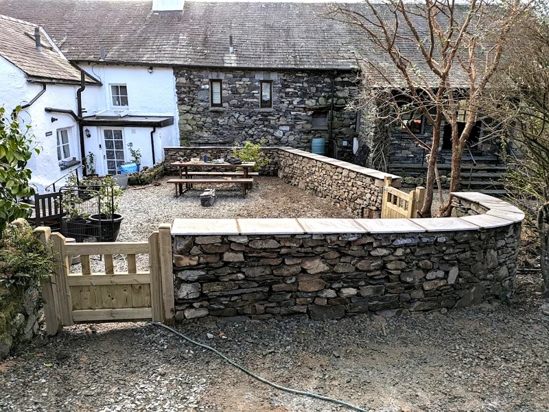
Stone walls, garden boundaries and stone facing, with attention to the existing property and surrounding stonework.
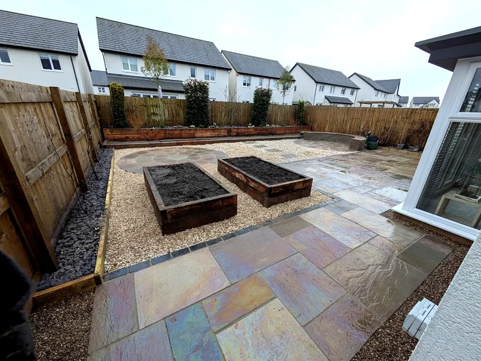
Patios, paths and porcelain paving, with the layout, levels and materials considered together.
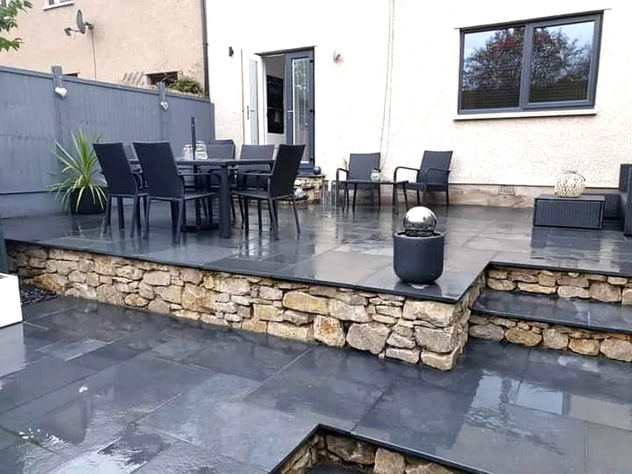
Garden layouts that bring paving, planting areas and changes in level together into a practical outdoor space.
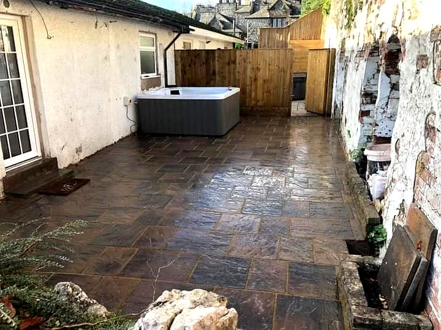
Decking, raised areas and water features planned as part of the garden, or as a smaller improvement.
Our work
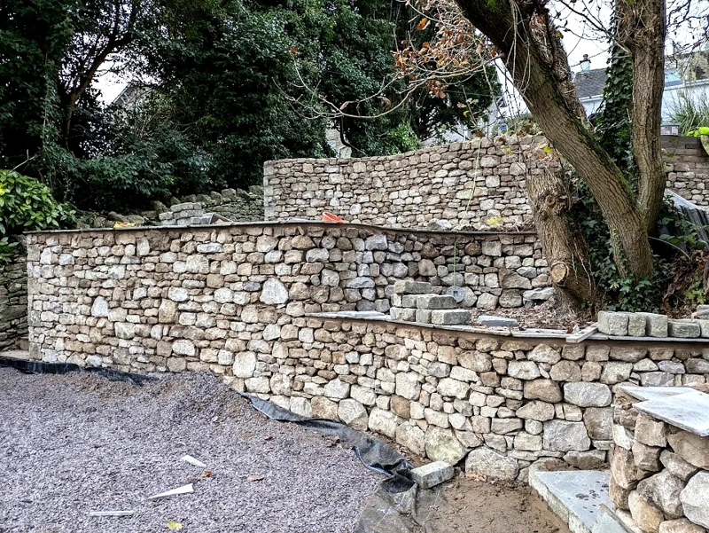
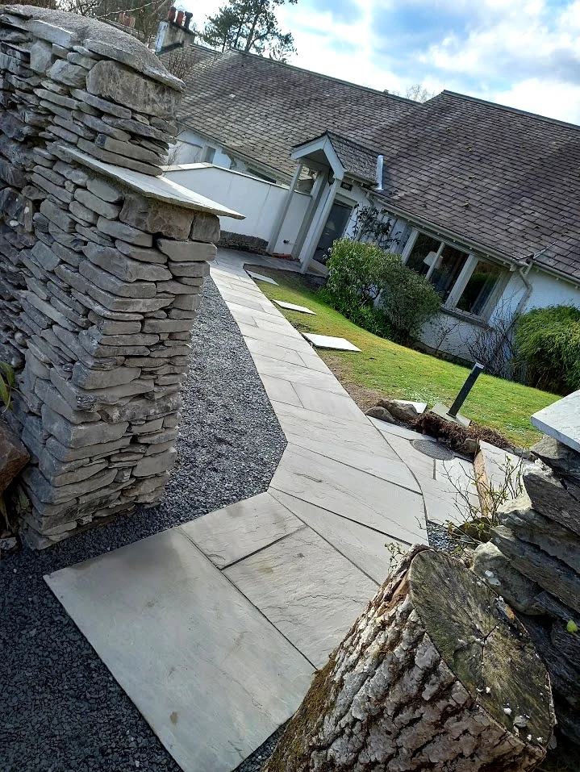
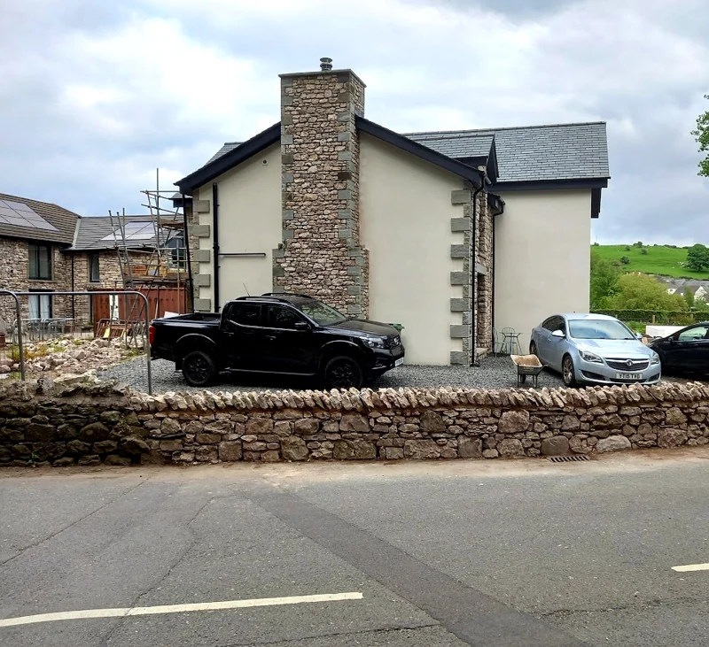
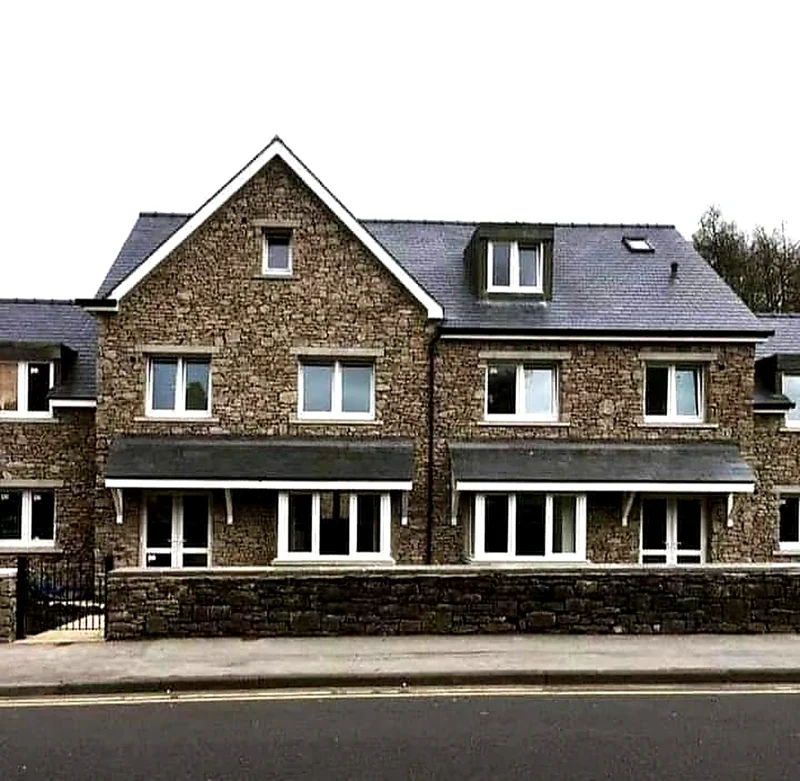
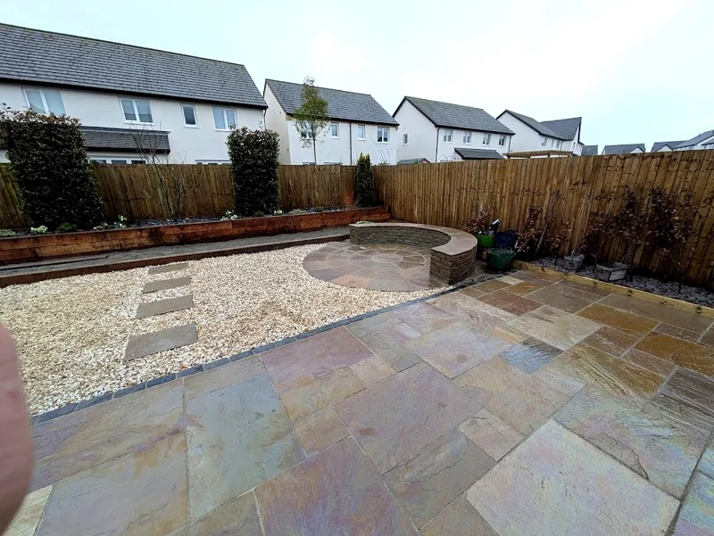
About JF Stone & Build
JF Stone & Build carries out stonework, patios and landscaping for homeowners across South Cumbria and the South Lakes.
Every job starts with a conversation about what you need, the space available and the materials that suit it.
Whether you need a new garden wall, a patio or a wider garden improvement, get in touch to discuss the work and arrange a quote.
Working across South Cumbria, including Carnforth, Lancaster, Morecambe, Kendal, Windermere, Ulverston and surrounding areas.
A closer look
See the paving, preparation and finishing details. Select any photograph to view it in full.


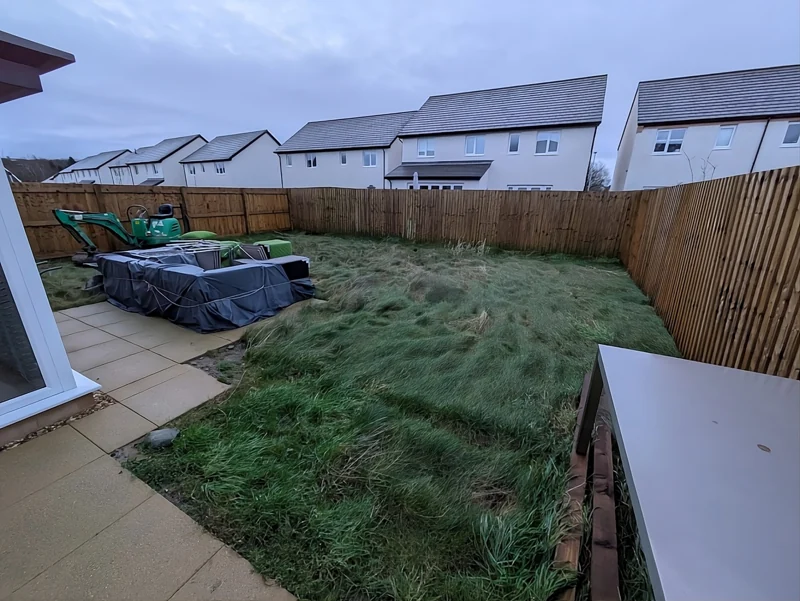
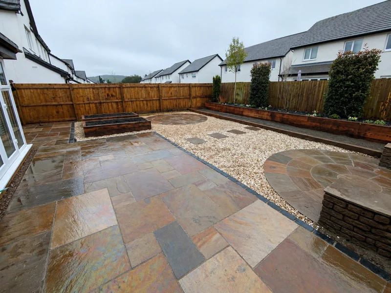
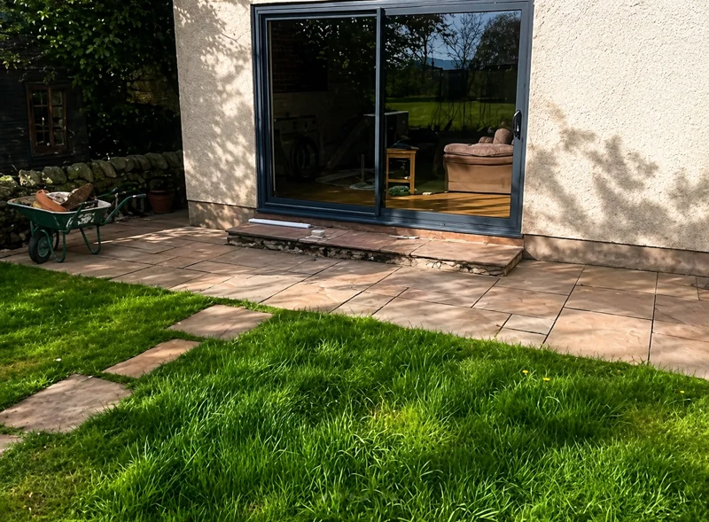
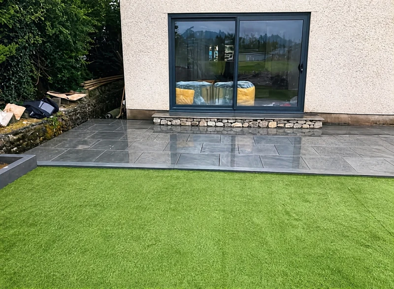
From enquiry to the work itself
Share a few details and your location. Photos are helpful if you have them.
Arrange a site visit and talk through the layout, materials and quote.
Confirm the scope and timing before the job starts.
Get in Touch
Tell us what you have in mind and where the property is. For a quick conversation, call JF Stone & Build on the number below.